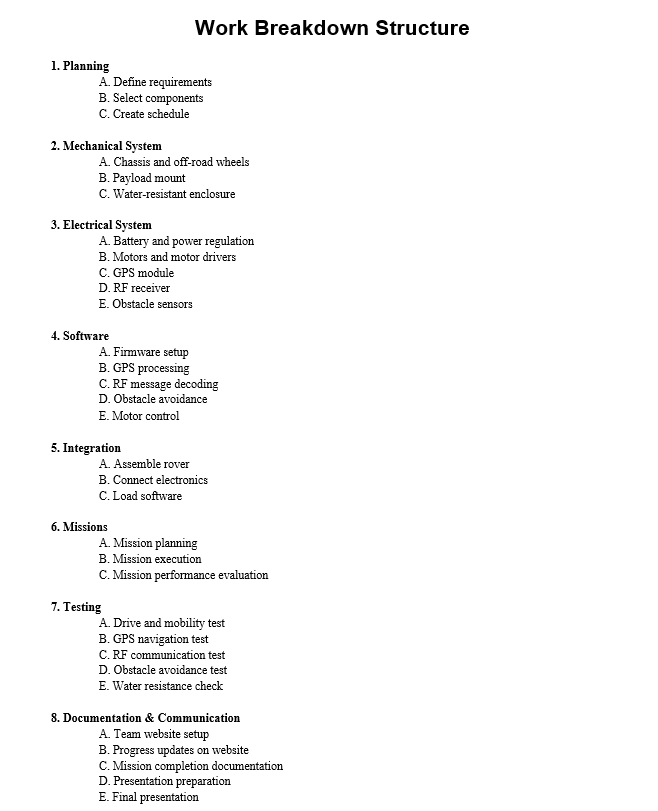

Defining the Project
Here you will find the building blocks of the overall development process for our autonomous rover. Our team will use these components to plan, track progress, and organize our work as the rover evolves from concept to final testing.
Gantt Chart
Our team developed and actively uses a Gantt chart to plan, monitor, and manage the engineering process of our autonomous rover project. The Gantt chart serves as a visual timeline that organizes our tasks, milestones, and deadlines, allowing us to clearly see how each phase fits within the overall schedule.
By using the Gantt chart, we are able to:
- Coordinate work across disciplines, ensuring mechanical, electrical, and software tasks progress in sync.
- Visualize dependencies between subsystems, helping us identify which tasks must be completed before others can begin.
- Track our progress effectively, so we can adjust priorities and timelines as challenges arise.
- Improve time management, ensuring that we stay on schedule and meet our project milestones.
- Enhance teamwork and accountability, as each member can see their responsibilities within the larger timeline.
In summary, our Gantt chart is a key project management tool that helps us maintain organization, coordination, and efficiency throughout the rover’s design and development stages.
If you would like to download it and see it for yourself, feel free!
Download Gantt Chart (PDF).
Work Breakdown Structure
The Work Breakdown Structure (WBS) provides a clear and organized overview of the key components involved in the engineering development of our autonomous rover project.
Having this WBS is essential in engineering development because it:
- Clarifies the project scope, ensuring every necessary component is identified.
- Improves planning and coordination between mechanical, electrical, and software teams.
- Supports task allocation and scheduling, allowing efficient resource management.
- Enhances risk management, since each subsystem can be analyzed and tested independently.
- Provides a foundation for progress tracking and performance evaluation.
In summary, this WBS transforms a complex engineering project into a structured, step-by-step plan that makes development more efficient, organized, and easier to control from design to implementation.
